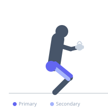
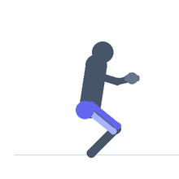

Exercise guide / Cossack Squat / Weighted Lateral Squat
Cossack Squat / Weighted Lateral Squat
The Cossack squat is a deep lateral squatting pattern where the lifter shifts their weight to one side, bending that knee deeply while keeping the opposite leg straight with the foot flat on the floor. It simultaneously trains hip flexion, knee flexion, and hip adductor flexibility on the extended leg, making it both a strength and mobility exercise. The movement can be loaded with a kettlebell or dumbbell held at the chest.
Primary muscles
rectus femoris
vastus lateralis
gluteus maximus
Secondary muscles
adductor magnus
adductor longus
biceps femoris long head
Stabilizers
gluteus medius
erector spinae
Equipment
No Equipment (Bodyweight)
Optional
Kettlebell
Dumbbell (Fixed)


Starting position
- Stand with feet approximately 1.5-2 times shoulder-width apart, toes pointed forward or slightly outward. Hold a kettlebell or dumbbell at chest height if loading.
Setup
- Begin with bodyweight to assess hip mobility. Add load only when you can reach depth with control.
Steps
- Step 1: Shift your weight to one side, bending that knee and hip while keeping the opposite leg straight.
- Step 2: Continue descending until the bent knee is fully flexed and the hip is as low as comfortable.
- Step 3: Keep the foot of the working leg fully flat on the floor. The straight leg's heel may rise slightly.
- Step 4: Drive through the working heel to return to standing, then shift to the opposite side.
Coaching cues
- Foot flat, heel down on working side
- Sit into the hip
- Keep the chest up
Breathing
- Inhale as you descend, exhale as you drive back to standing.
Range of motion
- Work to the deepest depth where you can maintain a flat foot and straight opposite leg.
Tempo
- 3-1-1-0, controlled throughout
Common mistakes
- Heel of working leg lifting off the floor
- Insufficient adductor flexibility causing the straight leg to bend
- Rounding the lower back at the bottom
Safety
- High demand on hip and groin flexibility — warm up thoroughly
- Do not force depth beyond your current flexibility
Training
- strength: 5–8 reps
- hypertrophy: 8–15 reps
- endurance: 15–20 reps
- strength: 3–4 sets
- hypertrophy: 3–4 sets
- endurance: 2–3 sets
- Rest: {'strength': 120, 'hypertrophy': 90, 'endurance': 45}